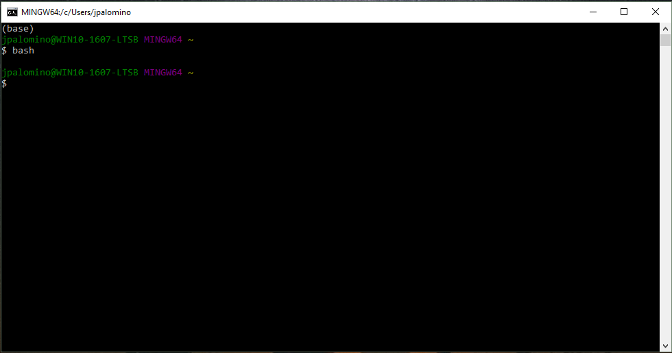

În primele zile ale calculului, computerul care procesa date sau efectua operațiuni era separat de instrumentul care îi dădea instrucțiuni pentru a face procesarea. A fost:
Astăzi, există computere care pot furniza atât comenzi, cât și efectuarea calculelor, iar aceste computere au interfețe grafice cu utilizatorul (cunoscute sub numele de GUI) care facilitează efectuarea sarcinilor.
Cu toate acestea, accesarea liniei de comandă sau a terminalului poate fi adesea mai eficientă decât utilizarea GUI-urilor pentru anumite sarcini și puteți trimite comenzi prin intermediul terminalului pentru a îndeplini în mod programatic aceste sarcini. De exemplu, lucrul cu fișiere din terminal este mai rapid și mai eficient decât lucrul cu fișiere într-un mediu grafic precum Windows Explorer sau Finder pe un MAC.
De asemenea, puteți utiliza terminalul pentru a lansa și a executa instrumente științifice deschise reproductibile, cum ar fi Jupyter Notebook, Python, și git, pe care le veți folosi în acest manual.
Shell este programul principal pe care computerele îl folosesc pentru a primi cod (adică comenzi) și a returna informațiile produse prin executarea acestor comenzi (adică ieșire).
Aceste comenzi pot fi introduse și executate prin intermediul terminalului. Acest lucru vă permite să vă controlați computerul tastând comenzi cu o tastatură, în loc să utilizați butoane sau meniuri drop-down într-o GUI cu un mouse/tastatură.
Bash (cunoscut și sub numele de „Bourne Again SHell”) este o implementare a Shell și vă permite să efectuați eficient multe sarcini. De exemplu, puteți utiliza Bash pentru a efectua operațiuni pe mai multe fișiere rapid prin linia de comandă.
Utilizarea Bash în terminal este o modalitate puternică de a interacționa cu computerul. GUI-urile și linia de comandă Bash sunt complementare - cunoscându-le pe ambele, veți extinde foarte mult gama de sarcini pe care le puteți realiza cu computerul dvs.
Cu ajutorul comenzilor Bash, veți putea îndeplini multe sarcini mai eficient și veți automatiza și replica fluxurile de lucru pe diferite sisteme de operare. Sarcinile comune pe care le puteți rula la linia de comandă includ verificarea directorului de lucru curent, schimbarea directoarelor, crearea unui director nou, extragerea fișierelor și găsirea fișierelor pe computer.
Lucrul în terminal cu Bash vă oferă posibilitatea de a:
Există multe opțiuni pentru a rula Bash pe Windows. Pentru acest manual, veți folosi Git Bash ceea ce vine odată cu instalarea git. Instrucțiunile pentru configurarea acesteia sunt urmatoarele:
Descărcați programul de instalare Git pentru Windows .
Rulați programul de instalare făcând dublu clic pe fișierul descărcat și urmând pașii de mai jos:
După ce ați instalat gitpe o mașină Windows, puteți deschide acest terminal căutând Git Bashîn meniul de pornire.
